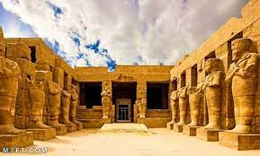

Luxor was the ancient city of Thebes, the capital of Upper Egypt during the era of the New Kingdom, and it was the glorious city of Amun, who later became the god Amun Ra, and the city was known in ancient Egyptian texts as the city of the scepter, and in a later period the Greeks called it Thebes, then the Romans called it Thebes. The city of Thebes was known as the city of a hundred gates, and sometimes south of Heliopolis, to distinguish it from the city of Heliopolis, which was the main center for the worship of the god Ra in the north..

Karnak Temple
The Karnak Temple is considered the most important and largest of the Pharaonic temples in Egypt. The temple is located west of Luxor (Thebes) in Upper Egypt.
Karnak consists of a group of temples, buildings, statues and columns. The ancient Egyptians called the temple the name “Ipet Sot”, which means “the chosen spot for the thrones of Amun”, while the temple was known at first as “Bar-Amun”, meaning the Temple of Amun or the House of Amun, as the ancient Egyptians believed that Karnak served as an ancient observatory where the god Amun communicated from with the people of the earth.
Hatshepsut Temple
Queen Hatshepsut (circa 1473-1458 BC) built a magnificent temple in Deir el-Bahari, on the West Bank in Luxor, facing the Karnak Temple, the main sanctuary of Amun on the East Bank. The sanctuaries, and it was designed by Senenmut, who bore many titles, including the director of the properties of Amun.
The temple consists of three levels, each of which contains a row of columns at the end, and at the top level, an open courtyard is located behind its row of columns, preceded by statues of Hatshepsut in the form of Osiris, the god of the dead.
Luxor Templet
The ancient Egyptians called the Luxor
Temple the name "Abet Reset", meaning "the southern sanctuary",
because of its location within ancient Thebes (now Luxor). The temple is
located about three kilometers to the south of the Karnak Temple, which was once
linked by a path bounded on both sides by statues of the Sphinx and the ram-headed Sphinx.
The oldest evidence of this temple dates back to the Eighteenth Dynasty (c. 1550-1295 BC).
The Luxor Temple was not like most other ancient
Egyptian temples on an east-west axis, but it was directed towards Karnak. Their temples at
Karnak in solemn procession to Luxor Temple so that they can visit the residing deity there,
Amun im-Opet, a celebration known as the Feast of the Opet.
Habu Temple
Ramesses III built his mortuary temple to record his victories on its walls, and to be a temple to Amun, the god of war, Sekhmet, and Osiris. Sekhmet was depicted in the form of a woman carrying the head of a female lion to indicate strength and ferocity.
The temple was designed in the style of temples in the ancient region of Syria, which Ramesses III saw when he fought them, and it also resembles the Temple of Rome to some extent, consisting of two eastern and western gates, a temple of Amun, a sacred lake on the right side of the eastern entrance, and two external walls of clay adobe and there are still some ruins of it, and an internal wall to protect the temple, and a sacred square containing statues of Sekhmet and Ramesses III.
Valley of the Kings
Most of the kings of the eighteenth, nineteenth, and twentieth dynasties of the New Kingdom era (about 1550 - 1069 BC) were buried in a dry river valley on the western bank of the ancient city of Thebes (modern Luxor), hence the name Valley of the Kings.
but this name It is not entirely accurate given that some members of the royal family other than royalty were buried in it, as well as some non-royal individuals, albeit high-ranking ones. The Valley of the Kings is divided into the eastern and western valleys. The eastern part is the most famous of the two, the western valley contains a few tombs, and the Valley of the Kings in all includes more than sixty tombs in addition to twenty incomplete tombs that are no more than pits.
Taxidermy Museum
The ancient Egyptian believed in the importance of preserving the body after death to ensure immortality in the afterlife, so mummification was a key component of the funerary practices of the ancient Egyptians, symbolically overseen by the deity Anubis.
The mummification process includes many complex steps that used to take about 70 days, and is accompanied by many rituals and reading of incantations, where the organs of the deceased are carefully removed through a small incision in his body and preserved in vessels known as canopic vessels, then the body is dried using natron salt, and finally He is wrapped in rolls of linen, and magical amulets are placed inside the wraps around different parts of the mummy to protect the body.
Finally, the family of the deceased carries his mummy to place it in a coffin for burial.
Luxor Museum
Luxor Museum is located on the Nile Corniche in the center of Luxor, southern Egypt, which was known in the past as Thebes. It was inaugurated by former President Mohamed Anwar Sadat with his guest, then President of the Republic of France, Valerie Jacikar de Stan in the year 1975 AD. But its assets were not comparable in any way to the exhibits of the Cairo Museum of Antiquities
.jpg)
.jpg)
.jpg)